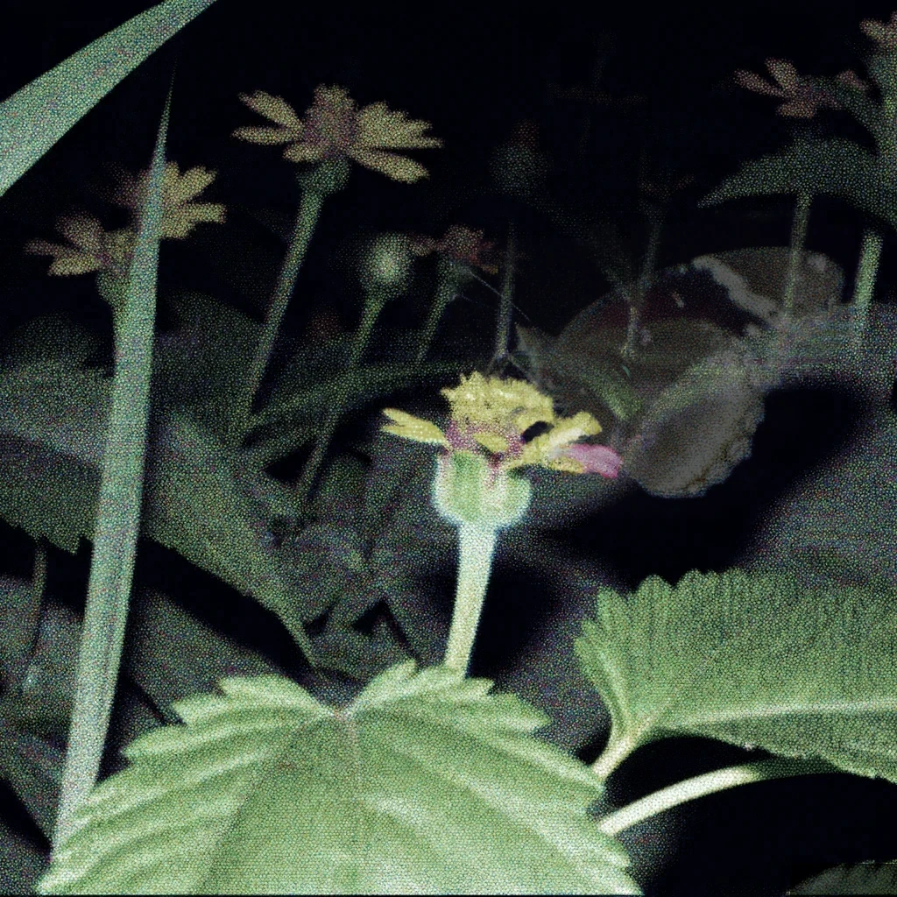
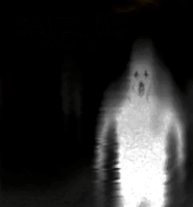

 Exploring the Paranormal: Can Science Validate the Existence of Ghosts?The existence of ghosts has always captivated people's imagination. Though it's occasionally dismissed as the domain of superstition and folklore, new discoveries force a deeper look at the potential for spectral entities to dwell with the living. Is science able to explain the mysterious phenomenon of ghosts? Certain scientific ideas provide a framework that could potentially accommodate the existence of ghosts. For example, quantum mechanics explores the strange behavior of subatomic particles. The idea of lingering energy imprints that can materialize as apparitions is made possible by the concept of entanglement, in which particles stay connected regardless of distance. Furthermore, the complexities of human perception and cognition are clearer, plus thanks to developments in consciousness studies and parapsychology. According to some studies, strange experiences that are linked to ghosts could be caused by the subconscious mind taking in minute contextual cues which are not visible to the conscious mind. An intriguing tale centers on a young girl who reported having vivid images of butterflies fluttering around her home. Despite her family members’ skepticism, the girl remained adamant about their presence. Could her enhanced sensitivity or minute energy fluctuations provide an insight into the other world?  In addition, customers' curiosity and concerns have been aroused by stories from Spark Electronics, a local electronics store. Consumers reported experiencing distorted voices and unexplained static from radios, which sound like electronic voice phenomena connected to paranormal activity. Were these disruptions caused by defective machinery, altered atmospheric conditions, or something else entirely unidentified at this time? While some who believe in the paranormal contend that these anomalies call for more research, skeptics may write these events down as random coincidences or technical difficulties. Working together, scientists, paranormal investigators, and first-hand experiencers may be able to provide a more thorough knowledge of the supernatural. Ghosts are still a fascinating mystery in the search for the answers to the universe's riddles. Perhaps one day, as science keeps stretching the bounds of understanding, we shall gain further knowledge into the enigmatic nature of these ghostly beings and close the gap between the visible and invisible. In the interim, the otherworldly domain entices us to investigate the unexplored sphere of human existence. Stay tuned as we explore more of the uncharted territory in search of answers to long-standing mysteries that defy logic. |